24 screenshots: both sections at 1440px and 390px, in all three themes with default and higher contrast. Captured from the production build. All care data is synthetic; only Adapt’s local controls are interactive.
Test report · Measurements
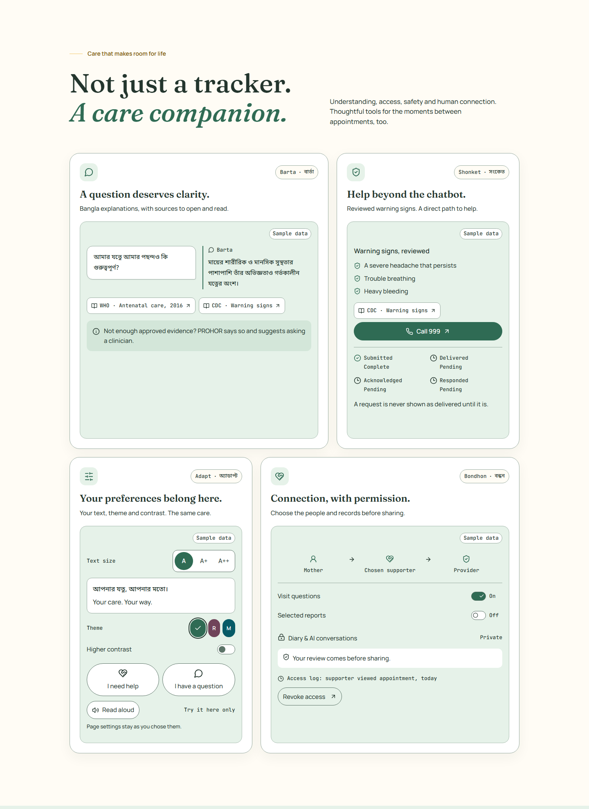
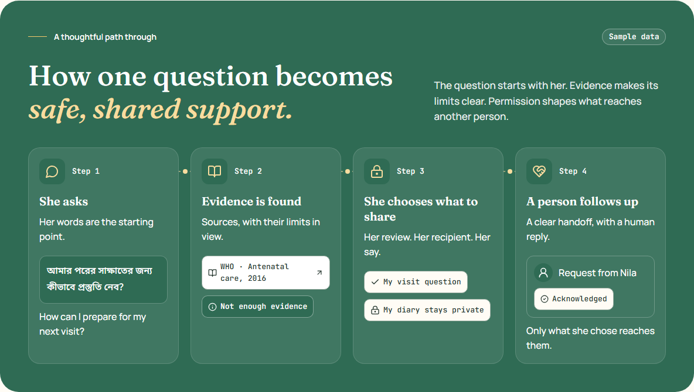
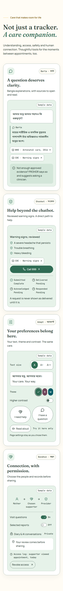
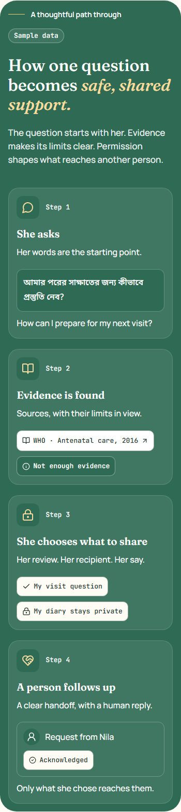
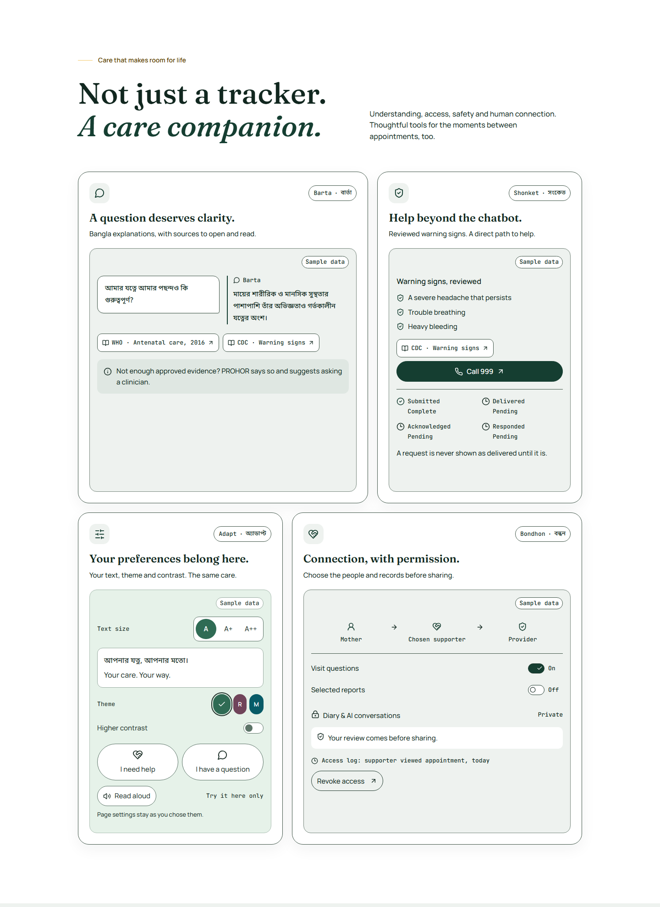
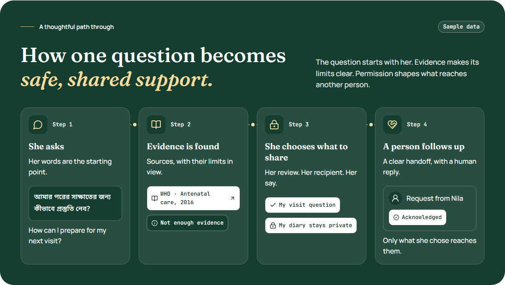
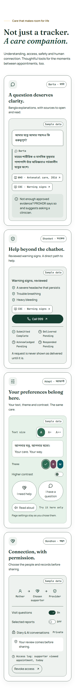
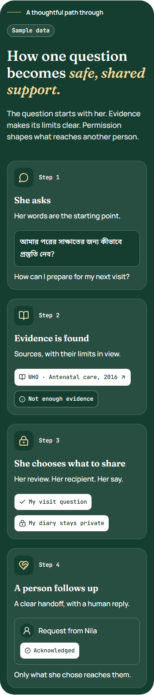
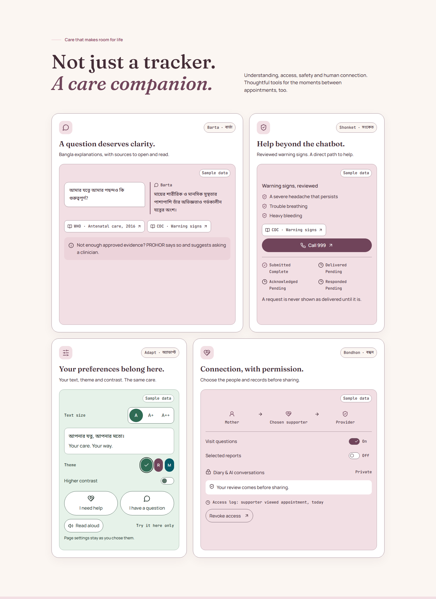
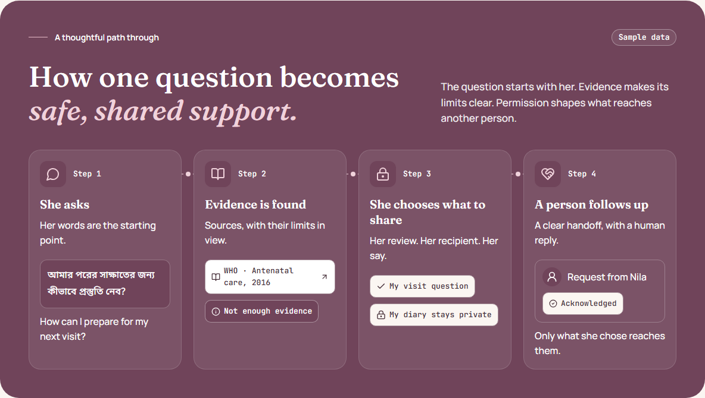
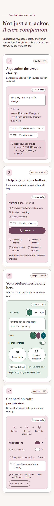
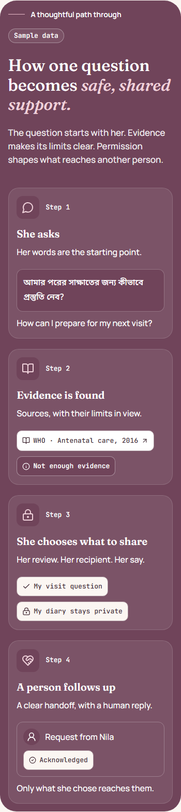
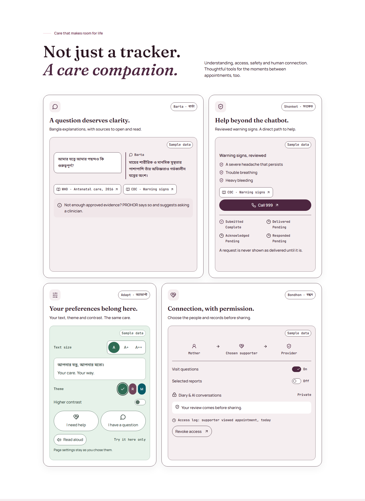
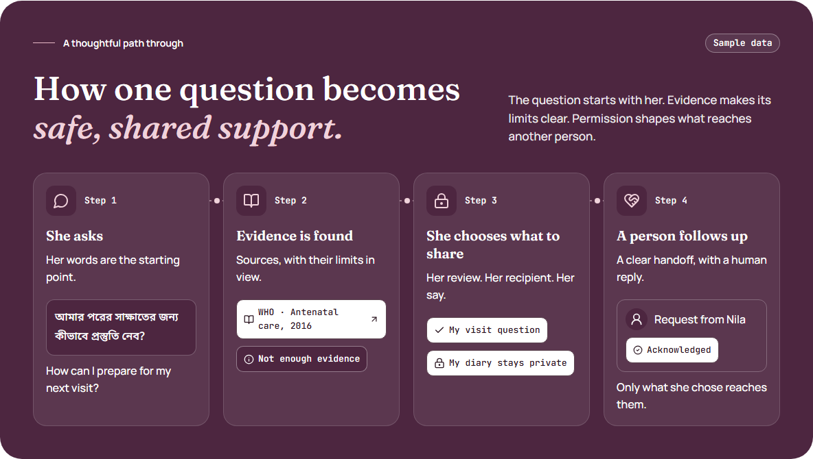
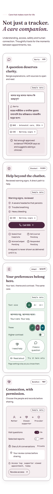
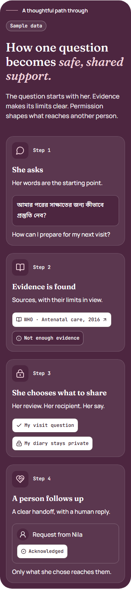
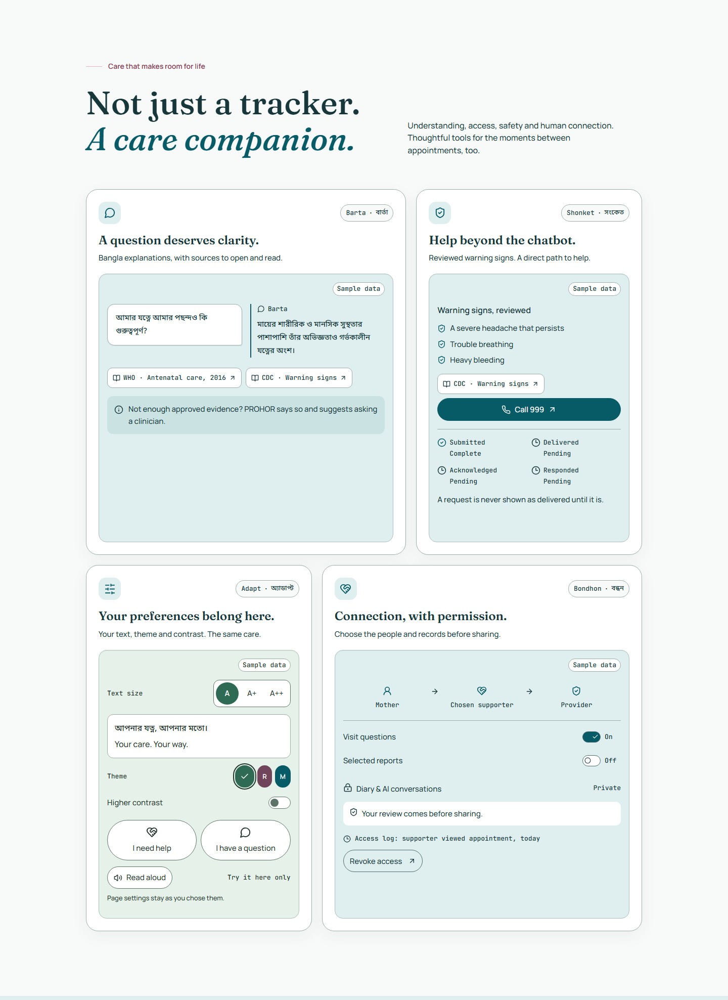
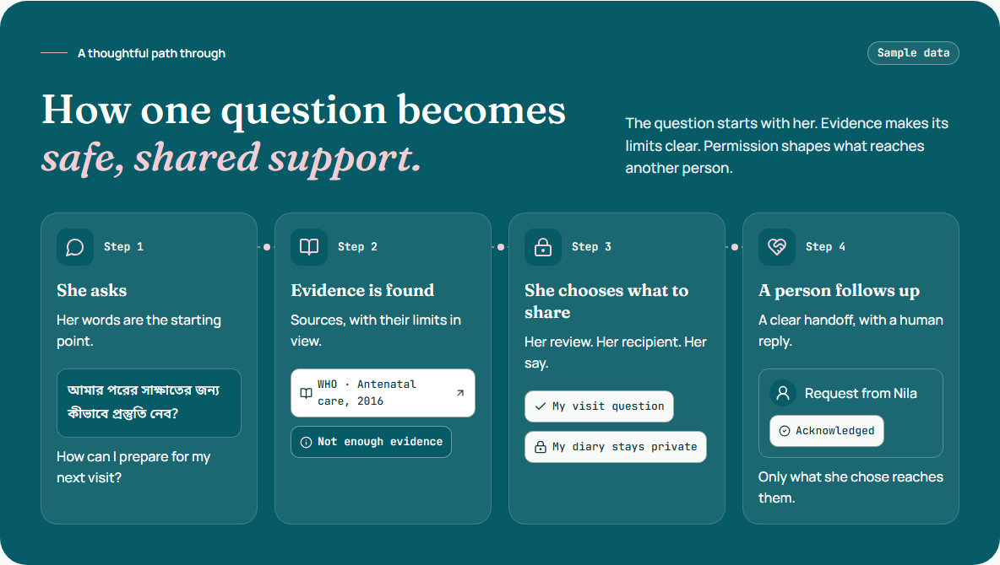
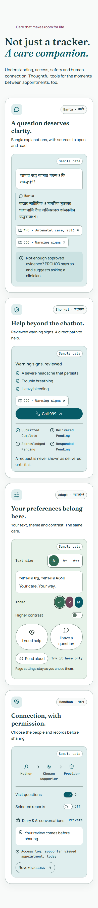
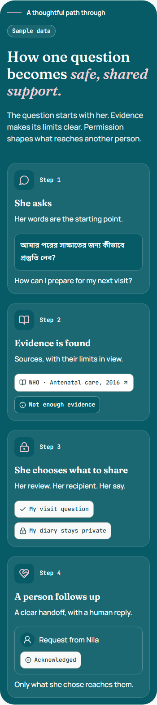
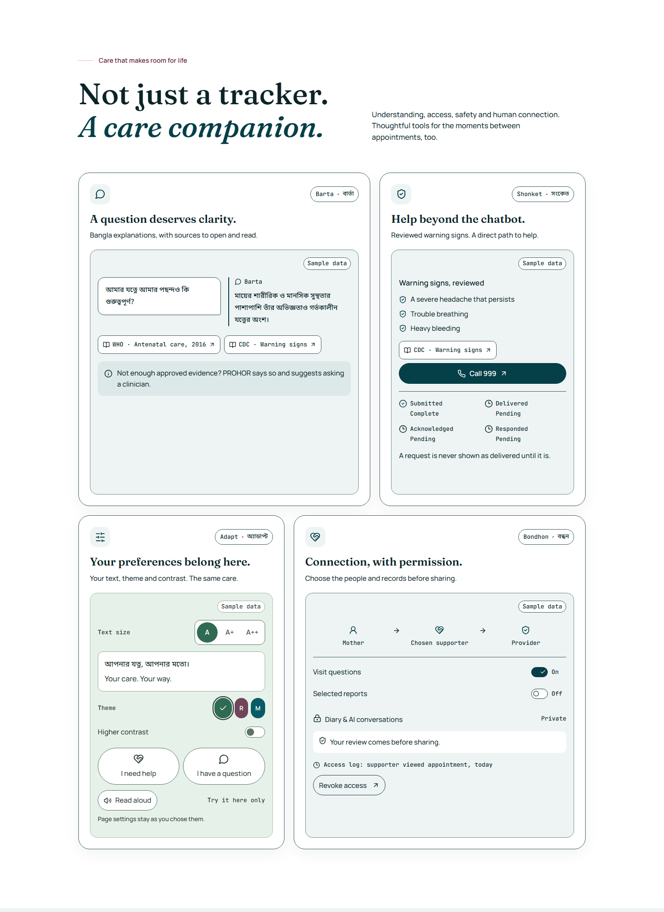
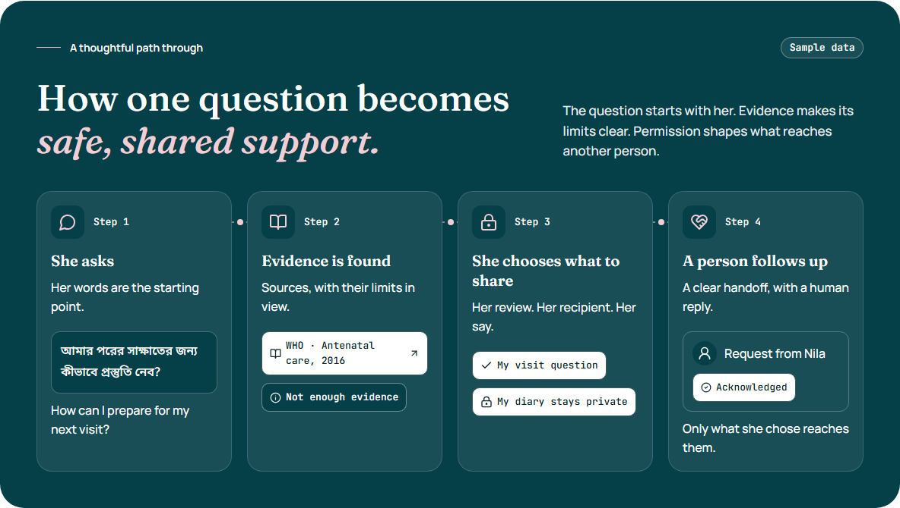
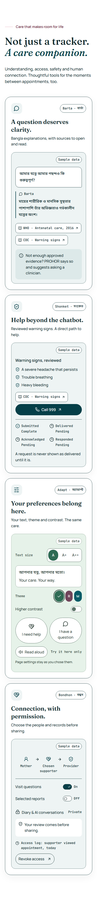
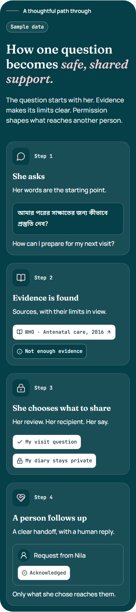